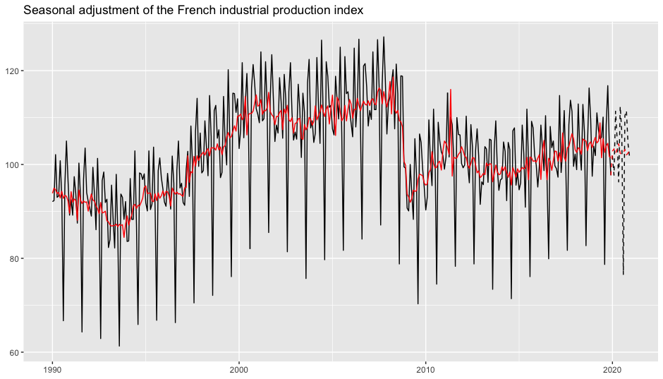
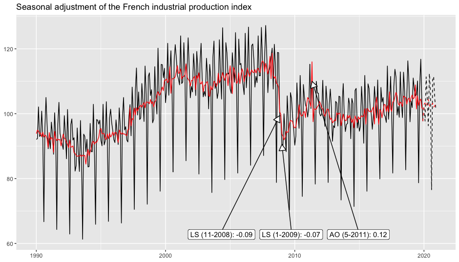
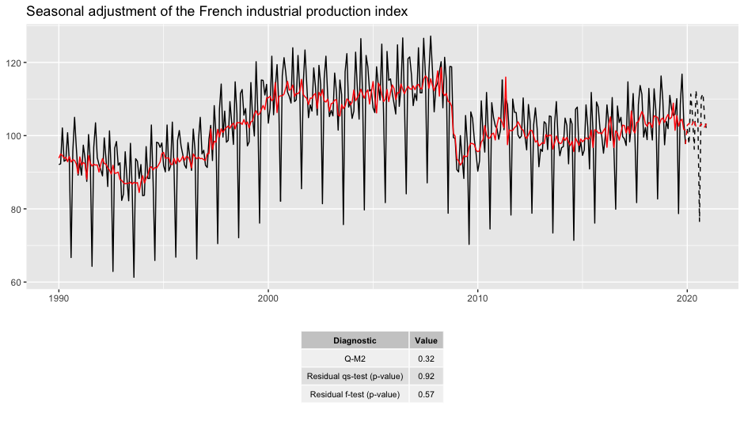

Overview
ggdemetra is an extension of ggplot2 to add seasonal adjustment statistics to your plots. The seasonal adjustment process is done with RJDemetra that is an R interface to JDemetra+, the seasonal adjustment software officially recommended to the members of the European Statistical System (ESS) and the European System of Central Banks. RJDemetra implements the two leading seasonal adjustment methods TRAMO/SEATS+ and X-12ARIMA/X-13ARIMA-SEATS.
There are 4 main functionnalities in ggdemetra depending of what you want to add in the graphic:
-
geom_sa(): to add a time series compute during the seasonal adjustment (the trend, the seasonal adjusted time series, etc.).
-
geom_outlier(): to add the outliers used in the pre-adjustment process of the seasonal adjustment. -
geom_arima(): to add the ARIMA model used in the pre-adjustment process of the seasonal adjustment. -
geom_diagnostics(): to add a table containing some diagnostics on the seasonal adjustment process.
Installation
Since RJDemetra requires Java SE 8 or later version, the same requirements are also needed for ggdemetra.
# Install release version from CRAN
install.packages("ggdemetra")
# Install development version from GitHub
# install.packages("devtools")
devtools::install_github("AQLT/ggdemetra")If you have troubles with the installation of RJDemetra, check the installation manual.
Usage
By default, the seasonal adjustment is made with X-13-ARIMA with the pre-defined specification “RSA5c” (automatic log detection, automatic ARIMA and outliers detection and trading day and easter adjustment). If no new data or seasonal adjustment specification is specified (method or specification), these parameters is inherited from the previous defined: therefore you only need to specify the specification once. In the following examples, the seasonal adjustment will be perform with X-13-ARIMA with working day adjustment and no gradual easter effect adjustment (it is the specification that has the most economic sense for the industrial production index).
To add the seasonal adjusted series and the forecasts of the input data and of the seasonal adjusted series:
library(ggplot2)
library(ggdemetra)
spec <- RJDemetra::x13_spec("RSA3", tradingdays.option = "WorkingDays")
p_ipi_fr <- ggplot(data = ipi_c_eu_df, mapping = aes(x = date, y = FR)) +
geom_line() +
labs(title = "Seasonal adjustment of the French industrial production index",
x = NULL, y = NULL)
p_sa <- p_ipi_fr +
geom_sa(component = "y_f", linetype = 2,
spec = spec) +
geom_sa(component = "sa", color = "red") +
geom_sa(component = "sa_f", color = "red", linetype = 2)
p_sa
To add the outliers at the bottom of the plot with an arrow to the data point and the estimated coefficients:
p_sa +
geom_outlier(geom = "label_repel",
coefficients = TRUE,
vjust = 4,
ylim = c(NA, 65), force = 10,
arrow = arrow(length = unit(0.03, "npc"),
type = "closed", ends = "last"),
digits = 2)
To add the ARIMA model:
p_sa +
geom_arima(geom = "label",
x_arima = -Inf, y_arima = -Inf,
vjust = -1, hjust = -0.1)To add a table of diagnostics below the plot:
diagnostics <- c(`Combined test` = "diagnostics.combined.all.summary",
`Residual qs-test (p-value)` = "diagnostics.qs",
`Residual f-test (p-value)` = "diagnostics.ftest")
p_diag <- ggplot(data = ipi_c_eu_df, mapping = aes(x = date, y = FR)) +
geom_diagnostics(diagnostics = diagnostics,
table_theme = gridExtra::ttheme_default(base_size = 8),
message = FALSE) +
theme_void()
gridExtra::grid.arrange(p_sa, p_diag,
nrow = 2, heights = c(4, 1.5))
See the vignette for more details.
Note that ts objects cannot be directly used in ggplot2. To convert ts or mts object to data.frame, you can use the ts2df() function. For example, the data ipi_c_eu_df used in this package is obtained by applying the ts2df()function to the ipi_c_eu data available in RJDemetra:
ipi_c_eu_df <- ts2df(ipi_c_eu)